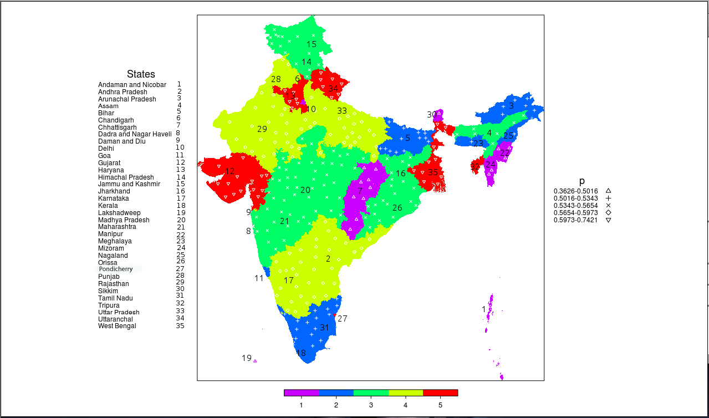

Estimated infection rate for Indian states
(2011, fourth quarter)
Estimated fraction of smear positive's(contiguous population) for Indian states(2011, fourth quarter)
Vihari Piratla
Home / About / CV / Projects / Publications / OtherLinks / Blog
|
Estimated infection rate for Indian states (2011, fourth quarter) |
 Estimated fraction of smear positive's(contiguous population) for Indian states(2011, fourth quarter) |